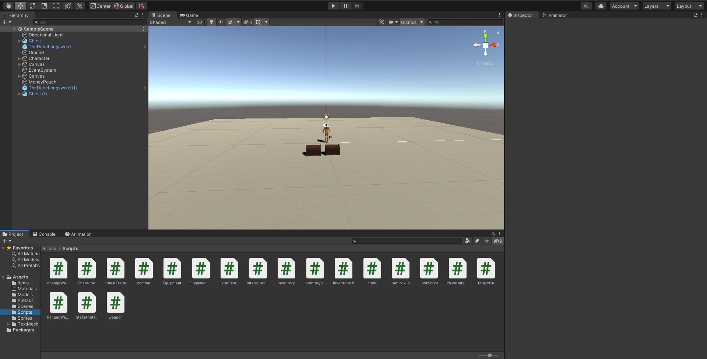

Dit is een unity project waar ik in mijn vrije tijd mee bezig ga om iets te maken wat ik zelf heel leuk zou vinden.
Dit project ben ik in 2022 begonnen en ben sinds dien ermee bezig geweest van tijd tot tijd wanneer ik zin had om eraan te werken. Mijn idee achter dit project die ik nog geen officiele naam heb gegeven is om een game te maken van onderdelen van games die ik graag samen wil zien. Wat ik tot nu toe heb zijn wat interacties en items maar waar ik ook wel blij mee ben is dat ik de 3d models zelf gemaakt heb in blender. Tot nu toe heeft dat het meeste tijd van dit project ingenomen om de character met wat items om te kunnen gebruiken in de development phase maar wel zo maken dat ik het later makkelijk kan uitbreiden.
Copyright 2023